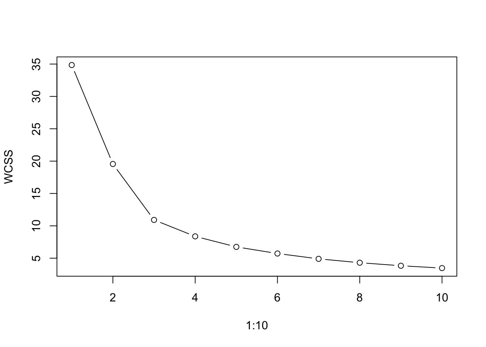
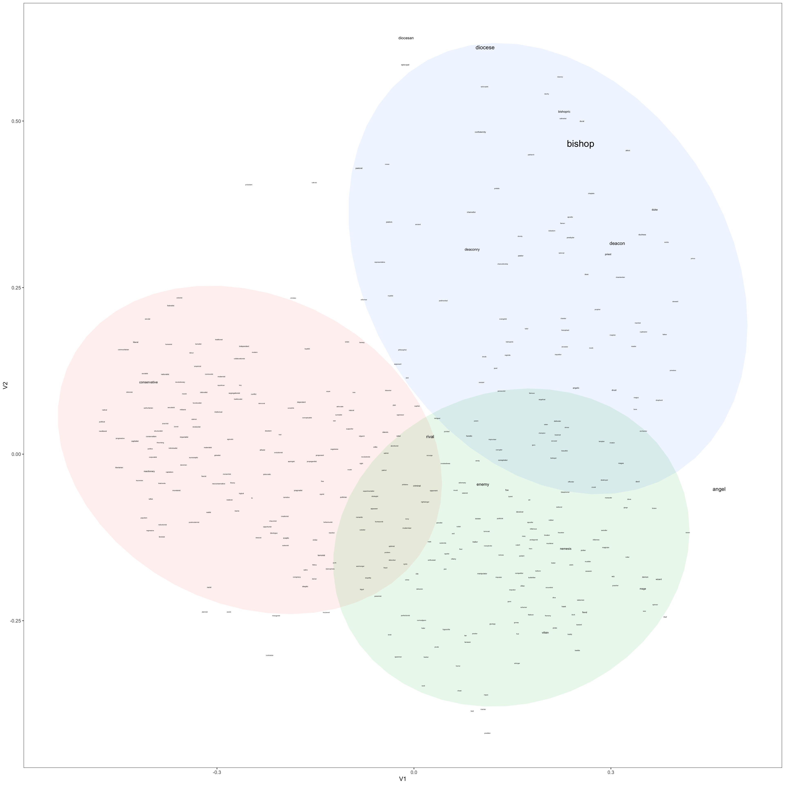

Code
library(tidyverse)
library(wordVectors)
library(vroom)
library(pbapply)
library(readxl)
library(ggrepel)
library(cluster)This repository contains data and code for reproducing a study on the use of arch- in present-day English. The data come from the ENCOW corpus (Schäfer & Bildhauer (2012)) described here.
Loading packages:
library(tidyverse)
library(wordVectors)
library(vroom)
library(pbapply)
library(readxl)
library(ggrepel)
library(cluster)Read in the data from ENCOW. The data are in two frequency lists, one for nouns and one for adjectives.
# read nouns
arch_nouns <- read_xlsx("data/COW16 nouns cleaned.xlsx")
# read adj
arch_adj <- read_xlsx("data/COW16 adjectives cleaned.xlsx")We remove false hits and add a column for the bases (i.e. the words without the prefix arch-), then export an Excel sheet for correcting the base lemma annotation that we get in this way, and we re-import the file after manual annotation.
# remove false hits
arch_adj <- filter(arch_adj, Keep=="y")
arch_nouns <- filter(arch_nouns, Keep=="y")
# get bases
arch_adj$Base_Lemma <- gsub("^arch-?", "", arch_adj$Token)
arch_nouns$Base_Lemma <- gsub("^arch-?", "", arch_nouns$Token)
# make sheet for annotating lexemes / correcting lemmas
# rbind(mutate(arch_adj, pos = "ADJ"), mutate(arch_nouns, pos = "N")) %>% writexl::write_xlsx("arch_adj_n.xlsx")
# read in again
arch <- read_xlsx("data/arch_adj_n.xlsx")We re-use the word2vec model trained for Hartmann & Ungerer (2024). The model can be downloaded here.
modal <- readRDS("path/to/file")For visualizing the results, we obtain the relevant lemmas from the annotated spreadsheet and the corresponding vectors from the model, and we apply multidimensional scaling (MDS) to show the semantic distances in two-dimensional space. We also calculate the k-means clusters to find groups within the data. We determine the appropriate number of clusters via visual inspection of the scree plot following Levshina (2015).
# get lemmas
lemmas <- sort(unique(arch$Base_Lemma))
# get Cosine distance
cosDist_mds <- cosineDist(model[[tolower(lemmas), average = FALSE]], model[[tolower(lemmas), average = FALSE]]) %>% cmdscale()
# get k-means clusters
plot(1:10, sapply(1:10, function(x) kmeans(cosDist_mds, x, nstart = 25)$tot.withinss), type = "b", ylab = "WCSS")
k_means_clusters <- kmeans(cosDist_mds, 3, nstart = 25)
# as df
cosDist_mds <- cosDist_mds %>% as.data.frame() %>% rownames_to_column()
colnames(cosDist_mds)[1] <- "lemma"
# add frequency information
freqs <- rbind(arch_adj, arch_nouns) %>% select(Base_Lemma, Frequency) %>%
group_by(Base_Lemma) %>%
summarise(
n = sum(Frequency)
) %>% setNames(c("lemma", "n"))
# multidimensional scaling
cosDist_mds <- left_join(cosDist_mds, freqs) %>% replace_na(list(n = 0))
# also add log frequency
cosDist_mds$logFreq <- log1p(cosDist_mds$n)
# add k-means clusters to df
cosDist_mds$kcluster <- as.factor(as.numeric(k_means_clusters$cluster))Finally, create the plot:
set.seed(1705)
cosDist_mds %>% filter(logFreq>2) %>% ggplot(aes(x = V1, y = V2,
size = n*5, label = lemma)) +
stat_ellipse(aes(group = as.factor(kcluster), fill = as.factor(kcluster)),
geom = "polygon", alpha = 0.1, color = NA) +
geom_text_repel(max.overlaps = 25) + theme_bw() + guides(size = 'none') +
guides(col = "none", fill = "none")
(To see a larger version of the image, right-click and select “Open image in new tab”. In most browsers you should be able to zoom in and out using Cmd and + or Cmd and -)